왜 AI가 HWP를 못 읽었나요?
영상이 소개하는 도구는 kordoc이에요. 광진구청 주무관이 혼자 만들었고, 깃허브에서 별 2,700개를 받았다고 해요. 화면 위쪽 노란 표시가 저장소 주소 chrisryugj/kordoc이고, 아래 빨간 줄 옆에 '광진구청 주무관 혼자 만든'이라고 적혀 있어요.
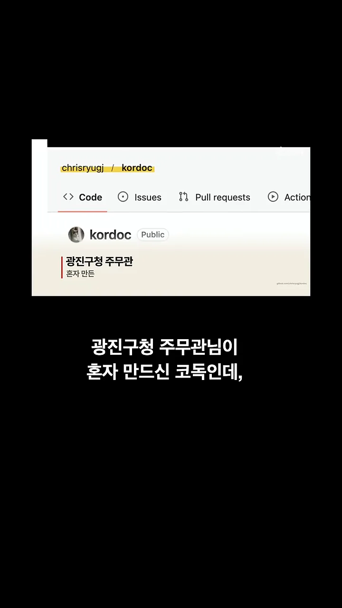
HWPX와 HWP는 속이 달라요
한글 파일은 두 가지예요. 요즘 쓰는 HWPX는 안을 열어 보면 글자가 그대로 들어 있어요. 화면의 .hwpx 카드를 보면 <hp:t>수신</hp:t>, 제목, 결재권자처럼 공문서 항목이 태그 사이에 그대로 보여요. 그래서 사람도 읽을 수 있고 AI도 쉽게 열어요.
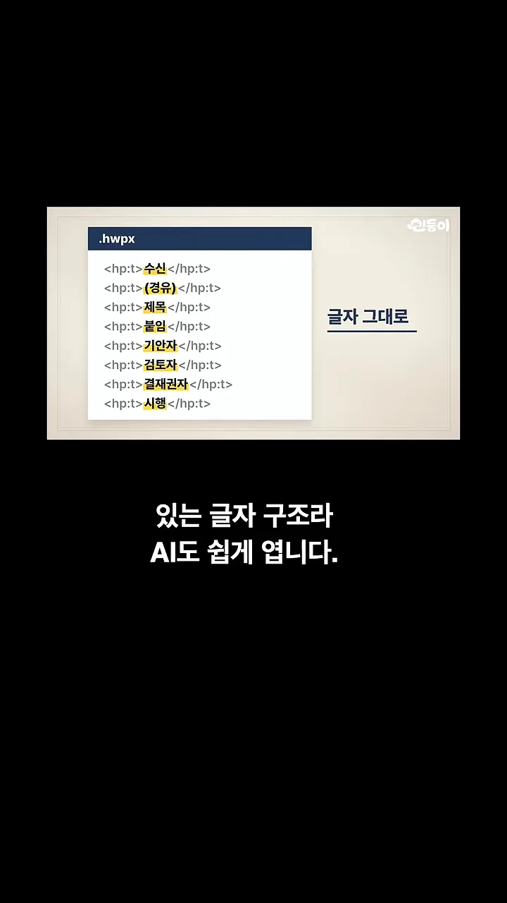
오래 써 온 HWP는 사정이 달라요. 빨간 .hwp 카드에는 글자 대신 11010000, 48 57 50 같은 0과 1, 숫자 덩어리만 보여요. 한컴 전용 바이너리 형식이라 겉으로는 무슨 내용인지 알 수 없어요.
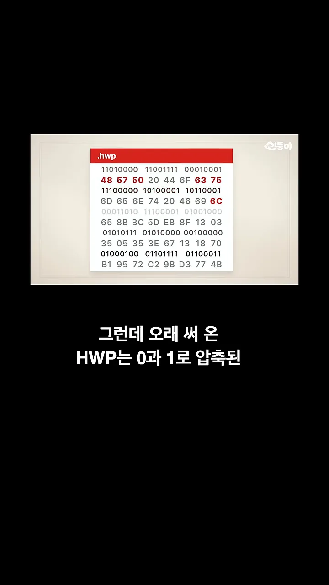
그래서 AI에게 HWP를 주면 글자만 겨우 뽑아냈어요. 화면 가운데를 보면 '구분 반환사유 반환금액 수업료' 같은 단어가 순서 없이 이어 붙어 있고, 아래에 빨간 글씨로 '표·서식 사라짐'이라고 적혀 있어요. 원래 표였던 내용이 칸 구분 없이 뭉개진 거예요.
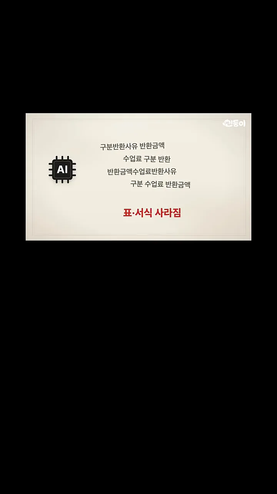
kordoc이 읽어 내는 것
kordoc은 이 HWP 구조를 직접 풀어요. 90년대 HWP 3.x부터 지금의 HWPX까지 한컴오피스 없이 읽어 내요. 한컴오피스를 깔지 않은 컴퓨터나 서버에서도 한글 파일을 다룰 수 있다는 뜻이에요.
칸을 합친 표도 모양 그대로
공문서 표는 칸을 합친 경우가 많아요. kordoc이 읽은 결과를 보면 노란 표시가 붙은 colspan="2", rowspan="6"이 보여요. 두 칸을 가로로 합쳤다, 여섯 줄을 세로로 합쳤다는 정보까지 그대로 남긴 거예요. 가운데 문구가 '병합 칸 그대로'예요.
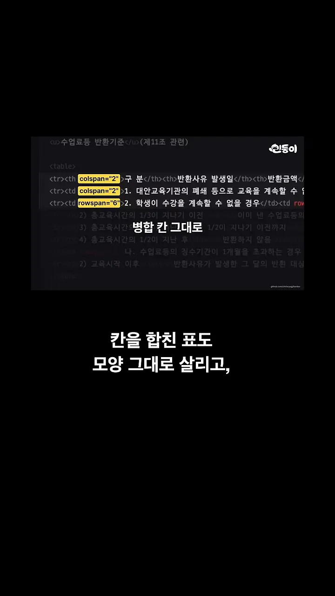
PDF나 스캔한 이미지도 같은 표로 읽어요. 왼쪽 문서 위에 HWP, HWPX, PDF, 스캔 이미지 탭이 있고, 지금은 '스캔 이미지'가 빨갛게 골라져 있어요. 오른쪽은 npx kordoc 반환기준.png를 돌린 결과예요. 이미지 파일을 넣어도 'HWP와 같은 표'가 나온다는 걸 보여 줘요.
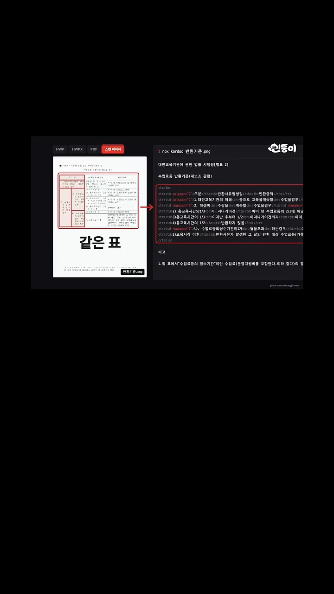
얼마나 정확한가요?
영상은 숫자 두 개를 들어요. 하나는 직접 모은 공문서 표 10,342개로 시험했더니 표 모양을 하나도 안 틀렸다는 거예요. 다른 하나는 한컴이 공개한 채점 기준이에요. PDF 200문서로 여러 파서를 겨루는 순위표인데, 처음 화면에서는 kordoc v4.15.5가 0.882로 4위예요.
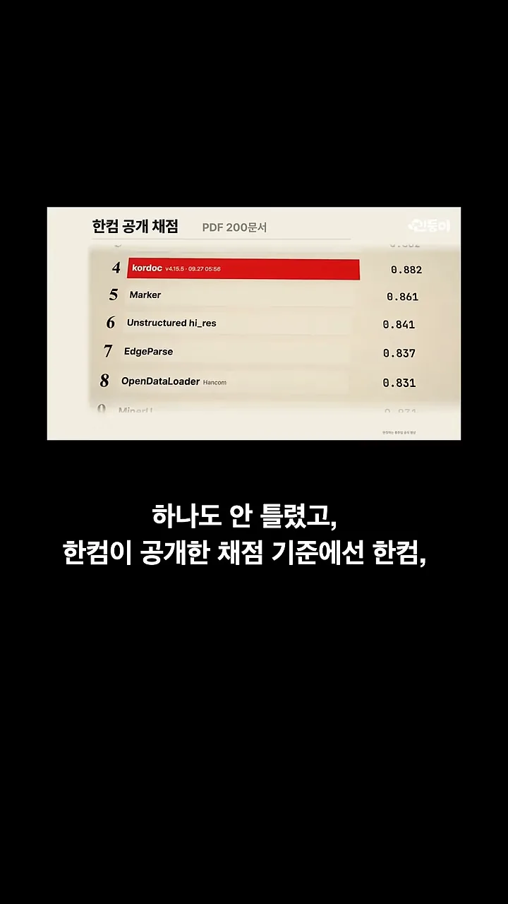
바로 다음 화면에서는 v4.15.6이 0.930으로 맨 위에 올라가요. 그 아래 회색 줄이 한컴 OpenDataLoader hybrid, Nutrient, IBM Docling이고, 맨 아래 빨간 테두리가 12위 마이크로소프트 MarkItDown이에요. 영상이 말한 '한컴, IBM, 마이크로소프트 도구보다 높은 점수'가 이 화면이에요.
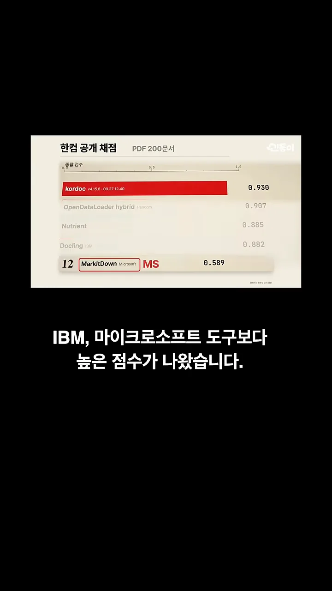
화면에 나온 점수를 한데 모으면 이래요.
| 도구 | 만든 곳 | 종합 점수 |
|---|---|---|
| kordoc v4.15.6 | 광진구청 주무관 | 0.930 |
| OpenDataLoader hybrid | Hancom | 0.907 |
| Nutrient | — | 0.885 |
| Docling | IBM | 0.882 |
| MarkItDown (12위) | Microsoft | 0.589 |
Claude Code·Codex에 연결해서 쓰기
kordoc은 무료예요. Claude Code나 Codex에 '코독 설치해 줘'라고 한마디 하면 연결된다고 해요. 화면에 뜬 저장소 설명을 보면 실제로 도는 명령은 npx -y kordoc setup이에요. 오른쪽 위에 빨간 '무료' 표시가 있고, 아래에 Claude Desktop, Claude Code, Cursor, Codex 같은 설치된 클라이언트에 등록된다고 적혀 있어요.
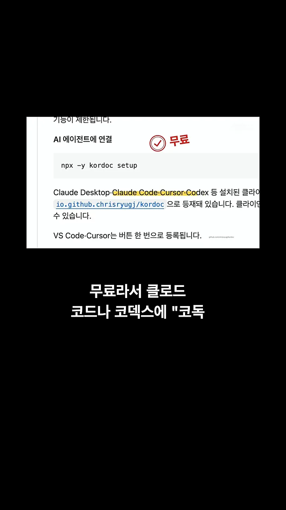
연결한 뒤에는 말로 시켜요
연결한 뒤에는 한글 파일을 넘기면서 원하는 일을 말하면 돼요. 화면 왼쪽 말풍선이 '표로 정리해 줘', 오른쪽 말풍선이 '새 양식에 옮겨 써 줘'예요. 아래 입력창에는 빨간 한글 파일 아이콘이 첨부돼 있어요.
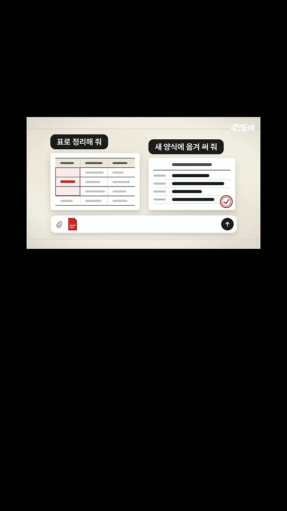
엑셀 명단을 주면 인증서를 한꺼번에 채워 내기도 해요. 화면은 'AI챔피언' 인증서 한 장이고, 이름(김서연)과 소속(서울특별시 광진구) 칸이 채워져 있어요. 아래 띠에 '인증서 50장'과 '서식 그대로'가 적혀 있어요.
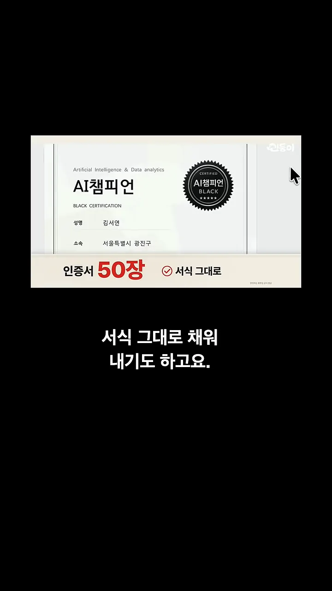